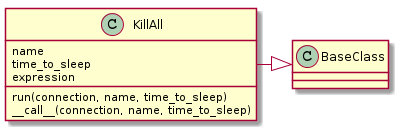

A module to kill processes.
The KillAll command (it probably should not be in the tools) kills processes.
KillAll |
|
KillAll.__call__ |

ps output currently matches the standard GNU output (a la Ubuntu), android, and CygwinExample Use:
connection = SSHConnection(hostname='elin', username='tester',
operating_system=OperatingSystem.android)
connection_2 = SSHConnection(hostname='bob', username='tester',
operating_system=OperatingSystem.linux)
killer = KillAll(connection, 'spotify')
killer()
killer.connection = connection_2
try:
killer('emacs')
except KillAllError:
killer.level = 9
killer('emacs')
TestKillAll.test_set_connection |
|
TestKillAll.test_kill_command |
|
TestKillAll.test_failed_kill |
|
TestKillAll.test_call |
|
TestKillAll.test_set_level |
|
TestKillAll.test_reset_level |